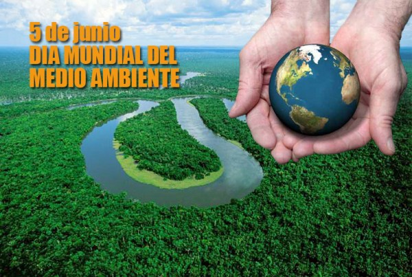

NOVEDADES
MEDIO AMBIENTE
El medio ambiente es el entorno centrado en la biodiversidad de especies,
donde se incluyen elementos naturales y artificiales que se relacionan entre sí;
y que pueden verse modificados a partir del comportamiento humano.
No obstante, existe una clasificación en la que se habla de medio ambiente natural
como aquel entorno conformado por elementos que nacen de manera natural,
sin intervención humana; a diferencia del medio ambiente construido que es
el que comprende modificaciones dadas a partir de la población humana.
¿QUE ES EL MEDIO AMBIENTE?
Es el área condicionada para la vida de diferentes seres vivos donde se incluyen
elementos naturales, sociales, así como también componentes naturales;
como lo es el suelo, el agua y el aire ubicados en un lugar y en un momento específico.
Como parte de los seres vivos, se incluyen todos aquellas especies que llevan consigo
acciones que demuestran vida; así como también las plantas; animales y seres humanos
que llevan a su vez, los elementos simbólicos que hacen parte de su estructura completa
y que se integran dentro del medio ambiente.
IMPORTANCIA DEL MEDIO AMBIENTE
Podemos comenzar diciendo que entendemos por medio ambiente al espacio en el cual el ser humano interactúa
con la naturaleza en mayor o menor grado.
La importancia del medio ambiente es hoy en día innegable y esto tiene que ver con el abuso y el
desgaste que el ser humano genera de manera cada vez más notoria sobre los complejos fenómenos naturales,
provocando alteraciones al medio ambiente que afectan no sólo a otros seres vivos si no también a sí mismo.
CONTAMINACION DEL MEDIO AMBIENTE
A medida que la población comenzó a crecer y aumentar su tecnología,
el impacto sobre el medio ambiente comenzó a ser mayor y más nocivo.
El momento donde comenzó a agravarse exponencialmente el medio ambiente fue a partir de la Revolución Industrial,
principalmente por la explotación de recursos minerales y fósiles.
De esta manera el equilibrio del sistema ambiental se perdió y la calidad de vida de muchos
seres vivos se halla desde ese momento en muy malas condiciones y para algunos resulta incluso imposible
adaptarse a los grandes cambios.

CATEGORIAS
SOBRE FORESTACION
Este extremo también resulta perjudicial al entorno, pues demasiada vegetación absorbe todos
los minerales de la superficie donde se encuentra.
De este modo el suelo se queda sin minerales
suficientes para su propio desarrollo. Una manera de evitar esto consiste en utilizar la Rotación de
cultivos adecuada a la zona.
LA CONTAMINACION DEL MEDIO AMBIENTE
La contaminación está acabando con la vida de muchas especies.
Cada día aumenta su proporción en nuestro planeta siendo el ser humano el mayor causante de esta avería,
sabiendo que el humano, el ser mas inteligente sería tan incapaz de cuidar su propio planeta...
Ahora estamos en el siglo XXI, ha empeorado las cosas ya que han inventado tantos materiales
químicos que están dañando demasiado a nuestro planeta.
La población, la basura, la destrucción de la capa de ozono son factores que destruyen al medio ambiente.
Puntos principales en contaminación, fábricas que despiden mucho humo que contamina el aire que espiramos.
DEFORESTACION
La deforestación arrasa los bosques y las selvas de la Tierra de forma masiva causando un
inmenso daño a la calidad de los suelos.
Los bosques todavía cubren alrededor del 30 por ciento de las regiones del mundo, pero franjas del
tamaño de Panamá
se pierden indefectiblemente cada año.
Las selvas tropicales y los bosques pluviales podrían desaparecer completamente dentro de cien años
si continúa el ritmo actual de deforestación.
DIA MUNDIAL DEL MEDIO AMBIENTE
El Día Mundial del Medio Ambiente fue establecido por la ONU en su resolución del 15
de diciembre de 1972Se celebra desde 1974 el 5 de junio de cada año, fecha con la
que se dio inicio a la Conferencia de Estocolmo en 1972, cuyo tema central fue el Ambiente.1
El Día Mundial del Medio Ambiente es un vínculo por medio del cual la Organización de Naciones Unidas (ONU)
sensibiliza a la población mundial en relación a temas ambientales, intensificando la atención y la acción
política Los objetivos principales son brindar un contexto humano, motivar a las personas para que se conviertan
en agentes activos del desarrollo sustentable y equitativo;
